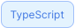
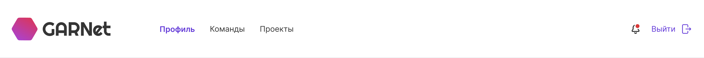
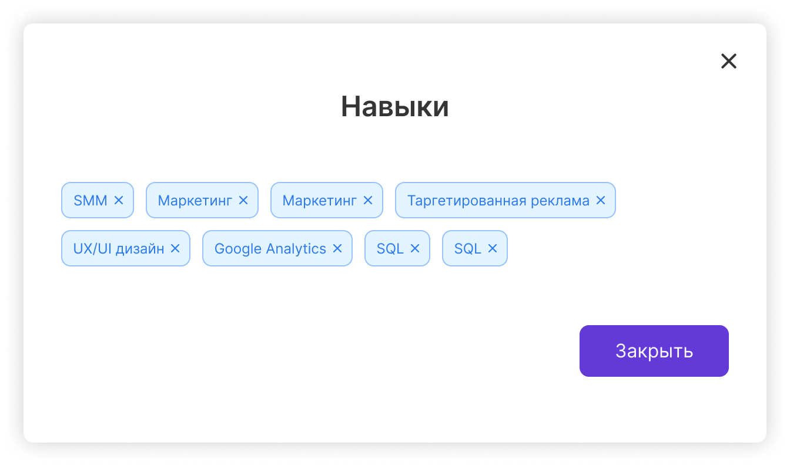
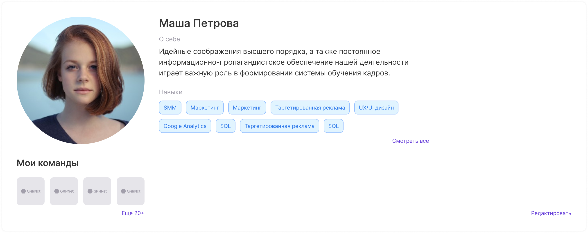
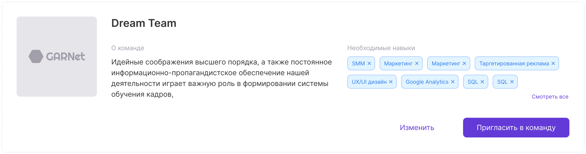
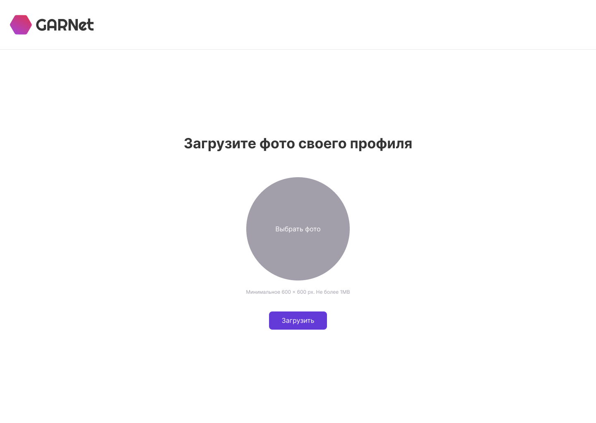
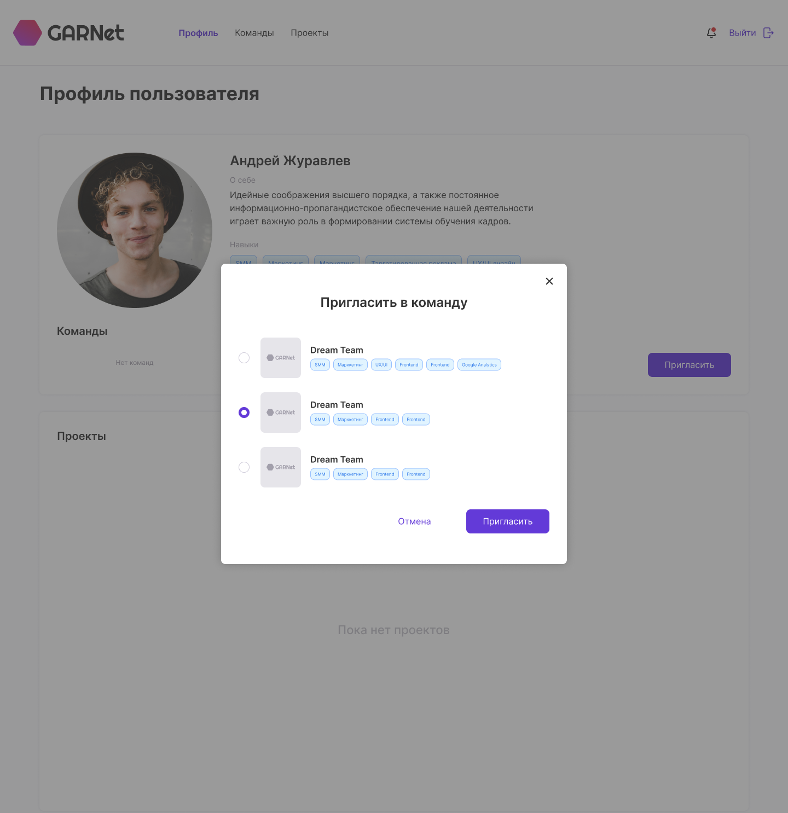

Фронтенд


DDD
Мы следуем строго по Design Driven Development, поэтому разработка стартовала после завершения дизайна, а так же проработки всех возможных сценариев пользователя по приложению.
Монорепозиторий
Архитектура проекта - монорепозиторий. Каждый компонент, фрагмент, страница, хэлперы - все выделено в отдельный пакет со своими уникальными зависимостями. Это позволяет нам изолировать пакеты друг от друга, избегать проблем с зависимостями и их версиями, а так же быстрее искать проблемы и фиксить их.
SOLID
Мы яростно чтим SOLID. Мы разделяем друг от друга хуки, сайдэффекты, рендер. Каждый компонент, функция, объект имеют свою зону ответственности. Преимуществом такого подхода является расширяемость, масштабируемость и переиспользование.
FSD
Проект построен Feature Sliced Design.
├── common/
│ └── client/
│ ├── entrypoints
│ ├── fragments
│ └── pages
├── features/
│ └── identity/
│ ├── entrypoints
│ ├── fragments
│ └── pages
├── shared
├── stores
└── ui
├── shared/
│ ├── data
│ ├── fragments
│ ├── kratos-client
│ ├── routes
│ └── utils
├── stores/
│ └── session
└── ui/
├── avatar
├── background
├── button
├── card
├── condition
└── ...
Микрофронтенд
К сожалению, в этом проекте мы не смогли реализовать микрофронтенды. Мы столкнулись с проблемой шэринга контекста темы emotion из-за чего дочерние энтрипоинты не рендерили компоненты.
Несмотря на это, мы все равно разделяем наш код по зонам ответственности. Например, авторизация в клиенте - это отдельное приложение/сервис.
План работы над клиентской частью
- Собрать тему проекта
- Собрать UIKit
- Собрать фрагменты
- Собрать страницы
- Интегрировать с бэкендом
1. Тема проекта
Формирование темы происходит в полуавтоматическом режиме - на базе данных из Figma мы генерируем тему посредством генератора @atls/figma-theme-cli.
В проекте мы используем CSS-in-JS:
- styled-components
- emotion
В первую очередь мы ориентируемся на хороший DX, гарантирующий быструю разработку
Пример: цвета
export const colors = {
text: {
accent: 'rgba(99, 58, 216, 1)',
accentHover: 'rgba(161, 87, 255, 1)',
accentPressed: 'rgba(62, 41, 120, 1)',
error: 'rgba(216, 57, 57, 1)',
gray: 'rgba(162, 159, 171, 1)',
lightGrey: 'rgba(208, 204, 218, 1)',
primary: 'rgba(0, 0, 0, 1)',
white: 'rgba(255, 255, 255, 1)',
secondary: 'rgba(53, 53, 53, 1)',
darkBlue: 'rgba(46, 121, 234, 1)',
},
button: {
primary: {
default: {
background: 'rgba(99, 58, 216, 1)',
font: 'rgba(255, 255, 255, 1)',
border: 'transparent',
},
hover: {
background: 'rgba(161, 87, 255, 1)',
font: 'rgba(255, 255, 255, 1)',
border: 'transparent',
},
pressed: {
background: 'rgba(62, 41, 120, 1)',
font: 'rgba(255, 255, 255, 1)',
border: 'transparent',
},
disabled: {
background: 'rgba(162, 159, 171, 1)',
font: 'rgba(208, 204, 218, 1)',
border: 'transparent',
},
},
...
Пример: шрифты
export const fonts = {
primary: 'Inter',
}
export const fontSizes = {
normal: 12,
semiMedium: 14,
medium: 16,
regular: 20,
semiLarge: 22,
preLarge: 24,
extraHuge: 34,
}
Провайдер темы
import * as React from 'react'
import * as theme from './theme'
import { ThemeProvider as ProtoThemeProvider } from '@atls-ui-proto/theme'
import { ThemeProvider as EmotionThemeProvider } from '@emotion/react'
import { GlobalStyles } from './global.styles'
const CustomTheme = ({ children }) => (
{children}
)
export const ThemeProvider = ({ children }) => (
{children}
)
2. UI
Мы формируем компоненты, стилизуем их темой проекта, сформированной ранее. Идея следующая - собрав UIKit мы можем быстро собирать фрагменты.
Вдохновление, но не подражание


Нам нравится стандартизация подхода у библиотек готовых компонентов, таких как MaterialUI. Однако мы не хотим вендор лока, поэтому содержим свою кастомную библиотеку UI компонентов, которую используем во всех наших проектах.
Пример: тег (навыки)

import styled from '@emotion/styled'
import React from 'react'
import { FC } from 'react'
import { Condition } from '@ui/condition'
import { ClearIcon } from '@ui/icon'
import { Box } from '@ui/layout'
import { Text } from '@ui/text'
import { TagElementProps } from './tag.interfaces'
import { TagProps } from './tag.interfaces'
import { appearanceStyles } from './tag.styles'
import { shapeStyles } from './tag.styles'
import { hoverStyles } from './tag.styles'
import { containerBaseStyles } from './tag.styles'
const TagElement = styled(Box)(
containerBaseStyles,
appearanceStyles,
shapeStyles,
hoverStyles
)
export const Tag: FC = ({
children,
variant = 'primary',
size = 'normal',
close,
onClick,
}) => (
{children}
)
3. Фрагменты
Далее мы собираем из компонентов часто используемые фрагменты на страницах. Фрагменты - совокупность компонентов, объединенных для рендера отдельных кусков приложения, а так же добавляющих логику.
Примеры
 Примеры
Примеры
4. Страницы
Из полученных фрагментов мы собираем страницы. Страница - это набор фрагментов согласно дизайна. Она передается в энтрипоинт для рендера.
Пример: онбординг
Пример: страница профиля
5. Интеграция с бэкендом
Для организации бэкенда мы используем в том числе и сторонние решения:
- Авторизация - ORY Kratos и @atls/next-identity-integration
- Реверс прокси - ORY Oathkeeper
Клиент
Для запросов к бэкенду мы используем Apollo Client. Клиент так же формируется в отдельном пакете:
import { ApolloClient } from '@apollo/client'
import { InMemoryCache } from '@apollo/client'
import { createUploadLink } from 'apollo-upload-client'
export const getClient = () =>
new ApolloClient({
cache: new InMemoryCache(),
link: createUploadLink({
uri:
process.env.NEXT_PUBLIC_BACKEND_URL ??
'https://stage.garnet.pet-project.habr.com/api/sandbox',
headers: {
'GraphQL-preflight': '1',
},
credentials: 'same-origin',
}),
})
Формирование запросов
Каждый запрос представляет собой отдельный хук, отвечающий только за выполнение этого запроса и предоставляющий доступ к данным, ошибкам и состоянию запроса.
Благодаря следованию принципам SOLID мы можем легко проводить дебаг или работать над расширением функционала.
Пример фрагмента
export const EnterDescription: FC = ({ onSubmit }) => {
const [errorText, setErrorText] = useState('')
const { value, setValue, disabled } = useDescriptionState(setErrorText)
const { formatMessage } = useIntl()
const { submit, loading } = useSubmitDescription()
const updateErrorText = () => {
validateValue(value, (id, values) => setErrorText(id ? formatMessage({ id }, values) : id))
}
const handleSubmit = async () => {
await submit(value)
onSubmit?.()
}
...
Пример хука
import { useUpdateUserDescription } from '../data'
export const useSubmitDescription = () => {
const { updateUserDescription, loading } = useUpdateUserDescription()
const submit = async (value: string) => {
try {
if (value) {
await updateUserDescription({ variables: { description: value } })
}
} catch (error) {
if (process.env.NODE_ENV !== 'production') throw error
}
}
return { submit, loading }
}
Пример мутации
import { useMutation } from '@apollo/client'
import { User } from '@shared/data'
import { UPDATE_USER_DESCRIPTION } from './update-user-description.mutation'
export interface UpdateUserDescriptionResponse {
userEditDescription: User
}
export interface UpdateUserDescriptionInput {
description: User['description']
}
export const useUpdateUserDescription = () => {
const [updateUserDescription, { data, loading }] = useMutation<
UpdateUserDescriptionResponse,
UpdateUserDescriptionInput
>(UPDATE_USER_DESCRIPTION)
return { updateUserDescription, data, loading }
}
Пример запроса
import { gql } from '@apollo/client'
export const UPDATE_USER_DESCRIPTION = gql`
mutation UserEditDescription($description: String!) {
userEditDescription(input: { description: $description }) {
id
description
}
}
`